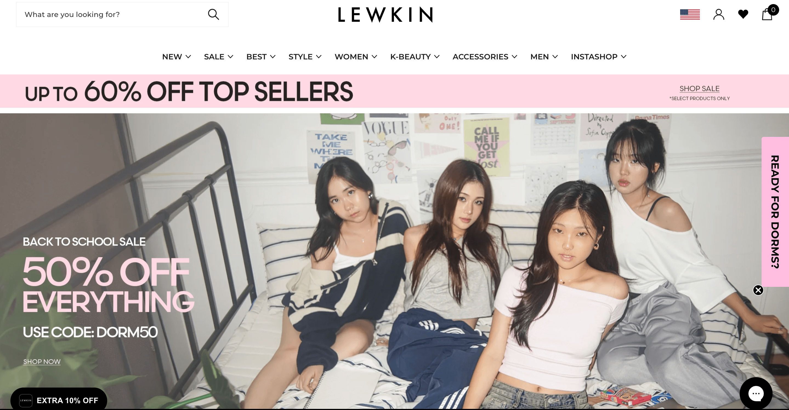

Hatchet Burger Pop-Up

Read More
Exploring dining and community through Ben Janasiak's weekly pop-up.Image source: Christine Shin
Becoming @ohnohanajo

Read More
Profile on Northwestern student and content creator, Hana.Image source: Christine Shin
Bennison's Bakery Contest

Read More
Highlighting the annual paczki eating contest.Image source: Christine Shin
Northwestern Student-Athlete

Read More
Profile on Northwestern golf student-athlete, Elise.Image source: Christine Shin
Expectations vs. Reality

Read More
Class of 2029 early decision admits reflect on first weeks at Northwestern.Image source: Jordyn Jones
Internship Takeaways

Read More
Reflections after interning at Lewkin, a global fashion company.Image source: Lewkin